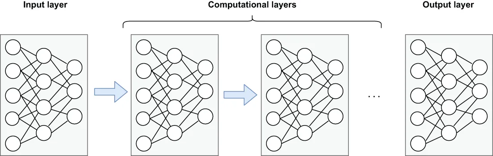

While the PMML format is very flexible and supports a wide variety of languages and ML models, there are instances when you will need to deploy an ML model that isn’t supported by PMML. Neural net models, which can be used to solve a variety of business problems, such as sales forecasting, data validation, or natural language processing, cannot be represented as PMML, and therefore a different approach is required for them to be deployed in near real-time mode.
虽然 PMML 格式非常灵活、支持各种各样的语言和 ML 模型，但也会出现这种情况：你需要部署一个 PMML 并不支持的 ML 模型。神经网络模型可以被用来解决多种业务问题，例如销量预测、数据校验或自然语言处理，但它们无法被表示为 PMML，因此要让它们以近乎实时模式部署，就需要一种不同的做法。
Modeled loosely on the human brain, a neural net consists of thousands or even millions of artificial neurons (nodes) that are interconnected. Most of today’s neural nets are organized into multiple layers of nodes, as shown in figure 11.6. Each node gets weighted input data that is fed into the computing node function and outputs the result of the function to the subsequent layer in the network. The data is fed forward through the network until a single value is produced.
神经网络大致模仿了人脑，它由成千上万个、乃至数百万个相互连接的人工神经元（节点）构成。当今大多数神经网络都被组织成多层的节点，如图 11.6 所示。每个节点接收带权重的输入数据，这些数据被送进该计算节点的函数中，而函数的结果则被输出到网络中的下一层。数据就这样在网络中向前馈送，直到产出一个单一的数值。

Figure 11.6 A neural net is comprised of an input layer, an output layer, and any number of hidden computational layers. The term deep learning refers to a neural network that is several computational layers deep.
图 11.6 一个神经网络由一个输入层、一个输出层，以及任意数量的隐藏计算层构成。"深度学习"这个术语指的就是那种有好几层计算层深的神经网络。
The basic concept of layering is that each additional layer of the network increases the accuracy of the model itself. In fact, the term deep learning refers to the use of neural nets that are several layers deep. In this section, I will demonstrate the process of training and deploying a neural net using the popular high-level neural network API known as Keras, which is written in Python.
分层这一做法的基本概念是：网络每多加一层，模型本身的准确度就会提高。事实上，深度学习这个术语指的就是使用那种有好几层深的神经网络。在本节中，我将演示如何用那个广受欢迎的高级神经网络 API（即 Keras，用 Python 编写）来训练和部署一个神经网络。